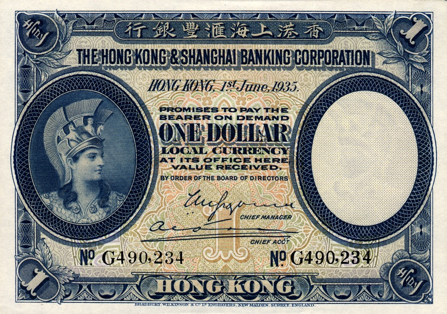

____
Валюта
Валюта в Гонконге - Гонконгский доллар.
Курс: 1 Гонконгский доллар - 9,58 рублей (7 февраля 2021).
Появился Гонконгский доллар в 1935 году. Находятся банкноты номиналом 10, 20, 50, 100, 500, 1000 долларов, а также монеты — 10, 20, 50 центов, 1, 2, 5, 10 долларов.

История
Согласно Основному закону Гонконга и Совместной китайско-британской декларации, за Гонконгом полностью оставлена автономия в сфере валютной политики. Денежные знаки Гонконга выпускаются правительством Гонконга (разменные монеты и банкноты в 10HK$) и тремя местными банками под надзором Управления денежного обращения Гонконга, выполняющего на деле функции центрального банка территории. В результате того, что дизайн банкнот всех трёх банков был изменён без изъятия старых банкнот из обращения, в настоящее время в обороте находятся до шести типов банкнот каждого номинала. При этом любой тип банкнот принимается без каких бы то ни было ограничений (исключение составляют некоторые торговые автоматы, которые по техническим причинам могут не принимать, например, десятидолларовые банкноты выпуска правительства Гонконга). Печать денежных знаков осуществляется компанией «Hong Kong Note Printing Limited». Наиболее частым обозначением гонконгского доллара является знак доллара ($), встречается вариант (HK$).
1 доллар 1935 г. эмиссии, выпущенный Правительством Гонконга.
Гонконгский доллар введён 2 февраля 1895 года с содержанием чистого серебра 24,2611 г. До середины 30-х годов XX века в Гонконге были в обращении также серебряные мексиканские доллары (как правило, в виде серебряной монеты с отверстием). На практике курс банкнот нередко отклонялся от стоимости металлических денег. Правительство колонии в 1935 начало выпуск казначейских билетов. В декабре 1935 был отменён серебряный стандарт и установлено твёрдое соотношение с фунтом стерлингов: 1 доллар = 15 пенсам.
С захватом Гонконга, Япония намеревалась ввести специальные деньги для этой колонии, но выпустила только временные денежные знаки. Для этого использовались 24 различных вида китайских банкнот, выпускавшиеся разными банками Китая в разные годы номиналом от 10 центов до 100 юаней. На банкнотах была проставлена надпечатка на английском «Hongkong Government», и на китайском «Временные денежные знаки для обращения по номиналу, указанному на аверсе. Надпечатано и выпущено в обращение Командующим Великими Экспедиционными Силами в Южном Китае, 17-й год Сёва (1941)».
____